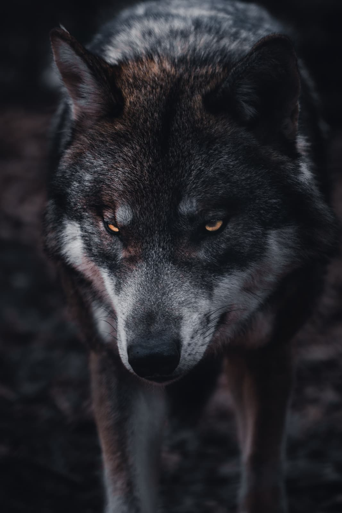
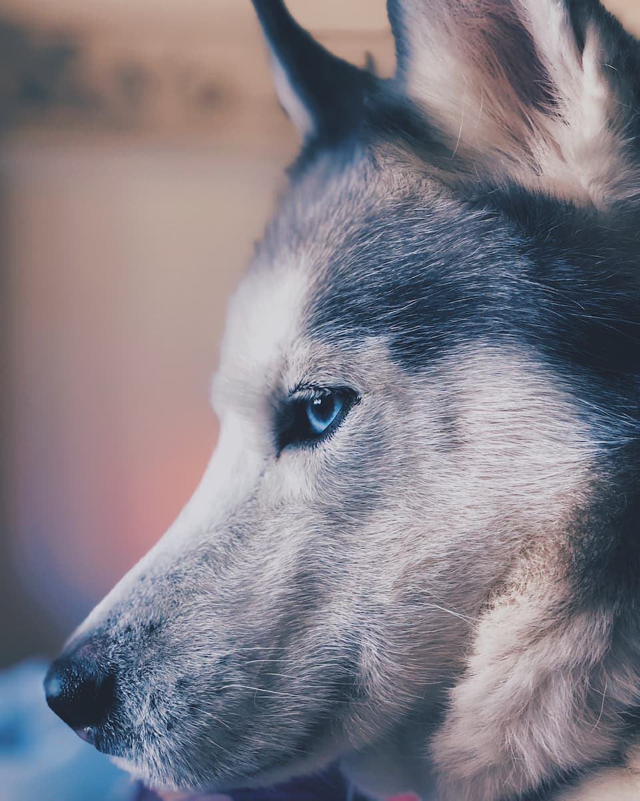

Lobo Cinza
da família canis lupusOs lobos são animais fascinantes, pertencentes à família Canidae, juntamente com cachorros, raposas e coiotes. Eles são conhecidos por sua inteligência, força e habilidade de caça em grupo.
É um sobrevivente da Era do Gelo, originário do Pleistoceno Superior, cerca de 300 mil anos atrás.[2] O sequenciamento de DNA e estudos.
Os lobos são animais sociais e vivem em grupos chamados de alcateias, que podem ter de 5 a mais de 30 indivíduos. Cada alcateia é liderada por um casal reprodutor, conhecido como alfa macho e alfa fêmea, e geralmente são os únicos que se reproduzem. Os outros lobos da alcateia ajudam a cuidar dos filhotes e a caçar para o grupo.
A comunicação entre lobos é muito importante para a coesão da alcateia. Eles se comunicam através de vocalizações, como uivos, latidos, grunhidos e rosnados, e também através de expressões corporais, como postura e movimentos da cauda e das orelhas.
"Lobos não precisam da aprovação de ninguém para serem selvagens e belos, pois já nascem com a coragem e a elegância em sua essência."
- Surgiu: 12.000 anos
- Tipo: Mamífero
- Idade Média: 13 anos
- Macho adulto: 80kg
- Fêmea adulta: 55kg
- Família: Lupus
Além disso, os lobos possuem uma série de adaptações físicas que os tornam excelentes caçadores. Seus dentes afiados, mandíbulas poderosas e garras afiadas lhes permitem desmembrar e devorar suas presas com facilidade. Eles também são conhecidos por sua resistência física e velocidade, podendo correr a uma velocidade média de 60 km/h.
Os lobos também têm um papel importante na regulação dos ecossistemas em que vivem. Eles ajudam a controlar as populações de herbívoros, mantendo o equilíbrio na cadeia alimentar. Além disso, seus uivos são capazes de estabelecer território e manter a coesão da alcateia.